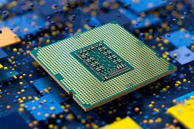

A processor, also known as a central processing unit (CPU), is the brain of a computer. It performs calculations, executes instructions, and manages the flow of data in a computer system.
There are two main types of processors: desktop processors and mobile processors. Desktop processors are designed for use in desktop computers, while mobile processors are designed for use in laptops, tablets, and smartphones.
Desktop processors are typically larger and more powerful than mobile processors. They are designed to handle intensive tasks such as gaming, video editing, and 3D rendering. Some popular desktop processors include the Intel Core i9 and the AMD Ryzen 9.
Mobile processors are smaller and more energy-efficient than desktop processors. They are designed to conserve battery life and handle tasks such as web browsing, email, and social media. Some popular mobile processors include the Qualcomm Snapdragon and the Apple A-series.
When choosing a processor, there are several specifications to consider:
Overall, choosing the right processor depends on your specific needs and budget. By understanding the differences between desktop and mobile processors, and the various specifications to consider, you can make an informed decision that meets your computing needs.